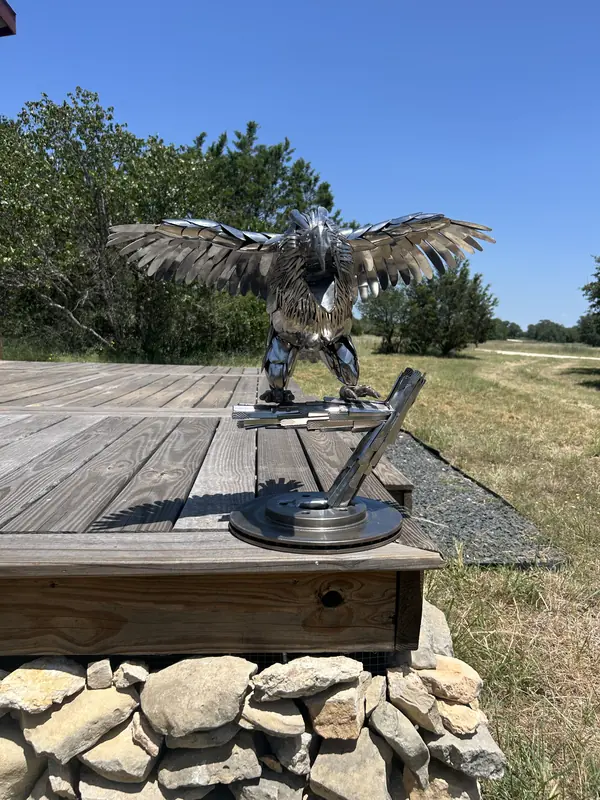

Sculptures Welded from Silverware, Bolts, and Spark Plugs

Matthew Farmer builds animals, vehicles, and team logos from recycled metal.
Commissions open starting June 2027.
What Each Piece Is Made From
I keep the original material recognizable, so you can see what each piece started as.
- DuckSpoons
- Bald EagleSilverware, on a branch of knife handles and a brake rotor
- Fishing BoatBolts, nails, and formed sheet metal
- Rescue HelicopterNails, sheet metal, and spark plug engines
- F1 CarWelded steel and sheet metal
- MotorcycleChain links, a spark plug, a wrench, nails, and bolts
- FishermanBolts, nails, and washers, on a wooden stand
- X-WingSpark plug engines, on a wooden stand
- Pig FamilyBolts
- Dog and Fire HydrantBolts and nails
The Bald Eagle
My most recent piece. The bird is silverware, and it stands on a branch of knife handles set on a brake rotor.
How the Eagle Was Built
Six steps, from bare frame to finished bird.
Want a Piece of Your Own?
Team logos, animals, and one-off ideas. Commissions open starting June 2027.